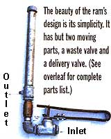
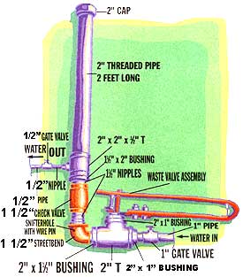
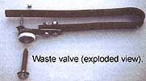
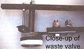
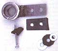
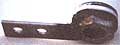
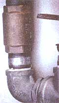
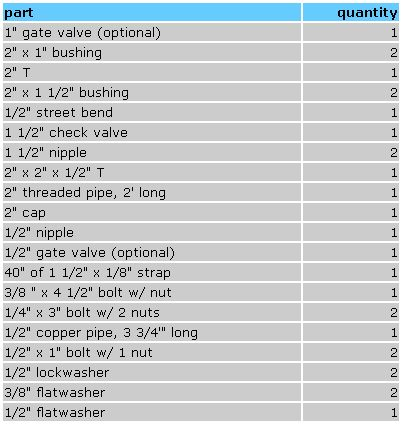

COUNTRY SKILLS
Pumping water is a main concern for any home or farm because, short of gravity feeding, it requires a ridiculous amount of energy. After surveying our new land, we knew there were several springs available-a large creek as well as a river. The houses we had rented previously all were spring fed so we knew digging a well was an unnecessary expense and hassle given the bountiful water in the area. None of the springs, however, were uphill from either the house or garden spots. We would need a system to pump from a gathered spring. Some brilliant idea had to come to our rescue, something that represented a technological triumph over adverse circumstances. That brilliant new idea proved to be one that was a few hundred years old.
Build a water ram pump, the next best thing to perpetual motion.
The ram uses the force of water running downhill from a cistern or dam to pump that water to a site higher that the original source ... without electricity.
The hydraulic ram was a familiar sight in this country before electrification became widespread. A non electric water pump with only two moving parts, a waste valve and a delivery valve, the ram is a prime example of how some homestead utility problems are solved more appropriately and reliably by older but well-proven technology than mainstream electrified alternatives so fully trusted today. With just those couple of moving parts that rarely wear out and are both easily replaced if they do, this pump is that rarest of technological investments, one that both lasts for generations and is virtually maintenance free. An additional plus: it can be built by the average person in a remarkably short time for around $100, depending on costs for plumbing supplies in your area and what kind of usable junk you keep around your place.
This gadget made its way into my world as our family was closing on the purchase of our homestead here in the Blue Ridge Mountains of Virginia. Remaining off grid was our intention from the start-a choice which carried with it the need to look at how we would power all aspects of the homestead right from the beginning.
As we began to plan and purchase our solar electric installation, it became evident that running an electric pump was financially out of reach. Electric pumps suitable for our situation were costly, but worse were the costs of an increased number of panels, a larger inverter, and an excessive run of electric lines to operate that type of pump. We had to rule out such a system.
Research turned up a few alternative energy books dating from the seventies with brief articles on ram pumps. Discussing days past with old-timers at the weekly jamboree at Cockram's General Store revealed a little more information on the subject. Mostly, however, the older crowd focused on the thrilling "CHUCHUNK" that "boomed through the holler" when a good-sized ram was operating.
Although several sources discussed the ram in detail, a clear explanation by picture, description, or discussion of how the machine operated was elusive. Perhaps I was just dense, but until I began building my first ram, the entire operation of the machine remained a mystery to me.
How the Pump Works
The hydraulic ram uses the force of water running downhill through a pipe to then pump some of that water uphill to a site higher than the source. Ex-physics students will no doubt be wrinkling their noses in hesitation after that remark, but bear with me. Water enters the system by running from some source (a spring cistern or dammed creek for example) into an intake pipe. The water moves downhill through the pipe some distance, enters the pump, and then exits the pump (and therefore splashes out onto the ground) through an open "waste" or "clack" valve. This produces a moving column of water. By allowing the column of water to flow downhill freely through the waste valve the kinetic energy of the moving water is prepared to work the pump. Eventually the flow of this water increases to a point that overcomes the tension of the waste valve spring and the clack (the rubber part of the waste valve) closes. By abruptly stopping the flow of the column of water,
a tremendous pressure is created. This pressure can't very well back out the inlet pipe, rather it is led through another pipe, through a one way "check" valve, and into a compression chamber. The compression chamber is simply a length of pipe capped at the top which remains partially full of air. The water whooshes past the check valve with all its fury squishing the air in the compression chamber until the kinet is energy is converted to, and rests for an instant as, potential energy in the form of compressed air.
Next the compressed air pushes the water back out of the compression chamber with all the energy it has stored. Since the check valve is a one-way valve, the water being forced backwards cannot return from whence it came; therefore this water is forced through the exit gate valve and into the delivery pipe, thus traveling uphill as far as the energy from the compression chamber will take it. This water continues to move as the ram cycles with the waste and check valves opening and closing and eventually reaches its uphill destination.
When water and air are compressed together, some of the air mixes with the water. Because of this, air must be reintroduced to the system constantly or else water leaving the compression chamber will take with it all the air in the pump, thus ceasing function altogether. To avoid this problem, a small "snifter" hole must be present below the check valve so that each cycle brings a gulp of air into the system which rises into the compression chamber and keeps the machine from water logging.
Site Analysis
First, explore your site to see whether or not it is suitable for a ram. You can harness almost any significant flow and fall to run a ram of one size or another. Problems may arise, however, when you figure the volume required of a system and the delivery height.
The formula for figuring these things is about two feet long. If a little physics study in the library is more time than you can devote right now, local engineers will be able to conduct a site analysis, including computer-generated plans for a set of numbers from your specific site. They will ask for the amount of fall from the source to the pump station, amount of water available from the source, height to be delivered, and amount of water needed at the delivery site (among other things) and then they calculate all the necessary aspects of your pump and system. Their results tell you in extreme detail the measurements of everything from drive pipe diameter, waste valve size, angle of drive pipe to the length of delivery pipe and its diameter-everything necessary to maximize the efficiency of your particular installation.
For those more inclined to build and tinker without a great deal of mathematical forethought, the ram shown here will operate under a substantial range of applications. It is intended for an input flow of 5 gallons/minute, a driving drop of 20 feet, and a delivery height of 100 feet. With a new, highly efficient delivery valve (see source list), it will provide more than 1,000 gallons/24 hours, but with the check valve listed that drops to about 250 gallons/24 hours.
You may increase the size of the ram by upping the size of the various pipe fittings which, generally speaking, will enable the ram to pump more water since more is available to drive the pump. Any small- sized ram pump can operate under a fairly wide range of circumstances, but poor efficiency is always the cost of off-sizing.
If plenty of water is available at a site with a nice drop, then efficiency may not be important. Also, on this model the tension of the spring and the depth of opening on the waste valve are adjustable, making adjustable the speed of the cycling of the pump. This allows efficiency to be improved by means other than simply pump sizing.
One other possibility for system design is to run two rams in parallel, thereby doubling output. Of course a site would require adequate water. to drive the pumps in this configuration.
Building the Pump
Now that the operation has been explained, building the pump will make more sense. To build this average-sized ram you will need:
The only part of assembly more complicated than screwing pipe fittings together is constructing the waste (clack) valve. This waste valve is a modification of a very dependable design promoted by VITA (Volunteers in Technical Assistance).
The first step to making the valve is to take one of the 2" x 1" bushings and have a smooth surface machined inside where the rubber washer/seal will bear against it when in the closed position (refer to photo). The machinist here in town does mine for $10, which is probably a reasonable average to expect most anywhere. While at the shop, for those who don't have the facilities and experience to cut and weld metal, have 4" cut off the 40" piece of 1 1/2" x 1/8" strap and have it brazed or welded in place on the top of the bushing close to, but not covering, the 1" threaded hole. The galvanizing needs to be ground off the bushing to allow the brazing or welding to hold properly. Drill two 1/2" holes through the small strap on the bushing that correspond to two of the same size at one end of the 36" of strap still remaining, so the two may be bolted together with a piece of rubber between them. A drill press makes this process easier, but it can be done with a hand drill. Next, make a mark 16" from the end with the two 1/2" holes and bend the strap around a 1 1/2!" pipe, centering the mark in the bend to make the waste valve spring. Drill two 1/4" holes corresponding to one another at the top and bottom of the spring, right where it flattens out after the half-circle bend to allow for one of the 1/4" x 3" bolts to pass through both holes. Add two nuts, one to adjust the tension of the spring and the other to act as a lock nut to keep the adjustment from moving during operation. Two more holes must be drilled and then the hard part is over. Bolt the spring in place to the bushing with the two 1/2" bolts finger tight. Make a mark in the center of the strap exactly where it passes over the center of the 1" in the bushing. Make nother mark beyond the first toward the end of the spring directly over the far edge of the bushing. Now unbolt the spring from the bushing and drill a 1/4" hole at the mark towards the end of the spring and a 3/8" hole at the mark made directly over the bushing's opening. To complete the waste valve, cut a piece of rubber (I use tractor tire tube for all the rubber pieces needed in this ram) large enough to sandwich between the waste valve spring and the stud it bolts to on the bushing. Cut holes for the two 1/2" bolts to pass through and then bolt the spring tightly in place using a lockwasher under each nut. Take the 3/8" bolt and place on it a 3/8" flatwasher, then the 1/2" flatwasher, then a piece of rubber cut into a 1 3/8 " outer diameter circle, then the other 3/8" flatwasher, and finally the length of copper pipe. Pass the fully loaded bolt through the machined bushing and then through the 3/8" hole in the spring. On the top side of the spring, add a lockwasher and a nut and tighten snugly the whole works.
It is imperative that this part of the valve open and close in perfect alignment so that the rubber washer closes completely on the machined surface inside the bushing and that it not bump or rub the side of the bushing in any way as it opens and closes. Slightly bending the spring or bolt works to tweak out a valve not perfectly aligned. Finally add the 1/4" bolt through the final hole left in the spring to make the opening depth of the waste valve adjustable. Add a piece of rubber over the head of the bolt by cutting two holes and pulling it down the bolt and over the head to reduce shock to the spring and help reduce wear.
The waste valve is now complete and needs only to be screwed into the system. Next, take the street bend and drill a Clinch1/16-inch hole just below the threads on one end. Take a small piece of copper or brass wire, bend it into a cotter pin shape, place it in the hole, and then spread the pin ends so it stays in the hole but may move around freely. This both prevents scum buildup and deters the tiny bit of water that will escape from the snifter hole from flowing out in a stream. To put the pump together, find a vice and a pipe wrench. Using the diagram and photos as a guide, wrap all male threads well in Teflon tape and screw the pump together a piece at a time. Some people pour a bit of concrete over the bottom of the ram to hold it fast while operating. That is not necessary for a little pump like the one described here. In fact, keeping the unit portable may be useful on some homesteads.
Installation
Be creative with your installation site and use common sense to guide the construction of your pump's environment. If the ram is pumping springwater, it should not freeze under even bitterly cold conditions. If, however, it were to stop running, then it would certainly freeze and break. Placing the ram in an in-ground structure or likewise in some concrete or stone spring house type structure will prevent freezing under any conditions. Also, bury all system pipes below the frost line to avoid wintertime problems.
The only other major advice to follow is to make a nice intake screen at the source. Frogs, leaves, and the like can stop a ram dead and have you disassembling the whole mess to figure out the problem.
Tinker with the spring tension and clack opening adjustments to get the right ram speed for your particular installation. The slower the pump cycles the more water gets pumped per stroke, but the more water is necessary for operation. If the ram action stops after a bit then you may need to speed the pump up a bit by loosening spring tension.
Aside from foreign matter entering the system, little can halt your ram pump. I know of one configuration that has been running for six years without fail and I have heard of many going fifteen years without clack replacement. In the right situation the ram far outperforms its electrified cousins and it's an investment of time and money with a guaranteed return rarely seen in the world today.
For information on site analysis, contact New Dawn Engineering (P.O. Box 440, Floyd, VA 24091, (540) 745-4782).They of fer a model of an ultra-efficient delivery valve which greatly increases the ram's power. Moonlight Solar (2932 Vicker Switch Rd., Christiansburg, VA 24073, (540) 3814971) is
the only other alternative energy company carrying the valve in the United States. They also plan to feature a versatile air compressor attachment for hydraulic rams, available hopefully by the summer. You may wish to inquire about the progress of that when you call.
|
Rubber pieces (beside their metal siblings) cut from tractor tire tube |
 Waste valve bushing with 4 strap drilled and welded in place |
Close-up of check valve (notice arrow on brass casing) and copper wire in snifter hole just below the valve in center of nipple |
|
 |
 |
 |
|
 |
 |
 |
|
 |
|
|